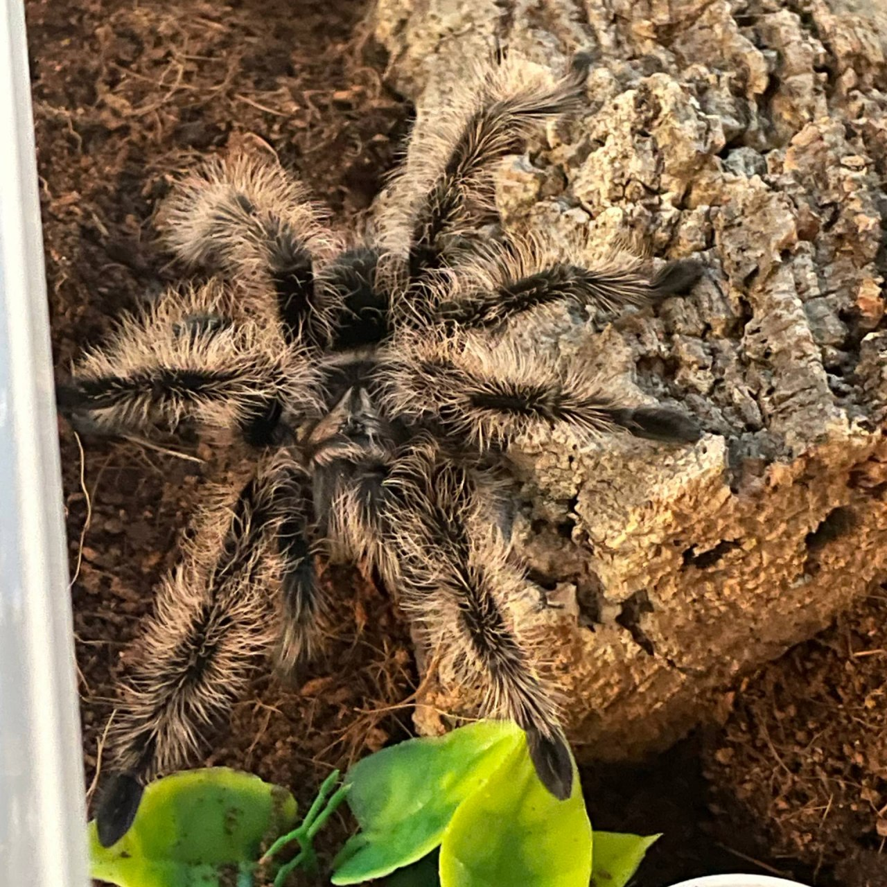
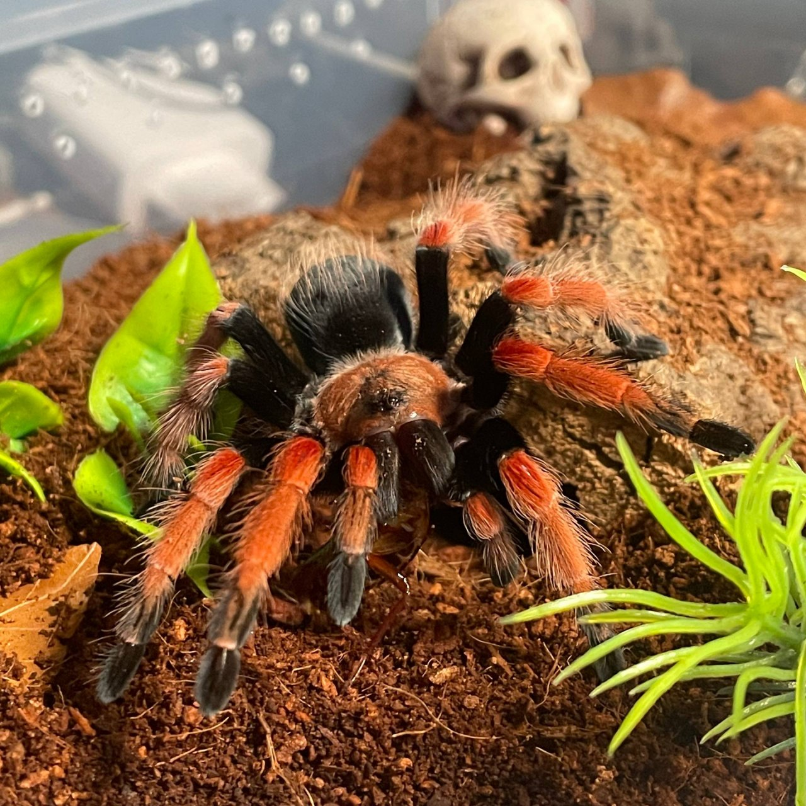

Playing video games is the oldest hobby of mine😅. I started playing and loving video games from really young age like 4 or 5 years old. And i startend playing on some old desktop with the classic beige color and an CRT monitor, thou it might had an windows 7; I don't know; the only i remenber is me playing all times of games (100% of them were pirated, but not by me😁).As of writing this my favorite genre of games is RPG RPG - Role-playing game wiki .
Games from all platforms (Consoles, PC[Steam], atd...) + order doesnt matter. My favorite games:
I am interested in learning stuff about animals mostly the niche or stupid facts about them. I would like to travel to africa to go on a safari, also travel to Australia os see my tarantulas and more arachnida.
I have several animals: 😺 cats, 🦜 parrat, 🐢 turtle and 🕷️ tarantulas + 🪳 roaches which serve as food for my tarantulas😀.


I don't know why, but when I have a bad day, animals make it better.
I like programing, thou I am not the best and never will be but anyways the most important thing is that it's FUN. As of writing this my language of choice is C#.
Languages I know, find interesting or would like to know:
In cyber security i tend to be more into the red teaming side. But red teaming is mostly my hobby, I don't really know if I would like to work as a pentester in 2026 and now on, because of the usage of AI. AI is superrior in cybersecurity than humans😞.
On the bright side I like to play/ do rooms on Hack The Box - hackthebox.comHTB and other platform; If i have enough free time and I am in a good mood; and ctftime - ctftime.org CTFs
// TODO